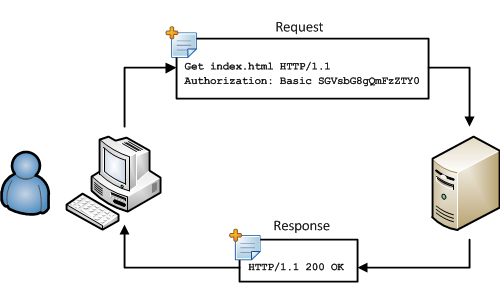

In 1997, after numerous flaws appearing in HTTP 1.0, the World Wide Web was introduced with HTTP 1.1. Now an official IETF Internet standard, it was defined in RFC 2068. The wait is finally over, and HTTP swept its past predecessors.
HTTP 1.1 is still used to this day despite being an old version of today's web interface. It patched up protocol failures from its past versions and introduced optimized key elements like keepalive connections. A way to reduce latency of a HTTP request.
Reuqest Piplining was an effective way to keepalive connections. This element introduced the idea of a client having the ability to send multiple request to the server without having to wait for the first request

Released in 2015, it was the new and revised version of 1.1, Meeting expectations to the growing web. Offering faster rates and data transfer responses. There are multiple ways HTTP/2 was faster, through prioritizing content during the loading phase.
HTTP/2 adapted multiplexing. The practice behind this new implementation involves the client requesting information and the web server responding with multiple streams of data all at once to the client. Instead of sending data on by one like.
- HTTP 1.1 used text format, while HTTP/2 used binary format.
Header Compression - Another feature added in HTTP/2. Despite having the same element from HTTP 1.1, the difference between the two is that HTTP/2 introduces a new method called HPACK. This feature eliminates a few bytes from every HTTP. The less bytes are included, the quicker the response time.
Response Splitting Protection - The binary format of HTTP/2 allowed it to stop HTTP response splitting attacks by forming a more structured format for data transfer. An improvement from HTTP 1.1 which allowed header improvement.
The release of HTTP/2 was in 2015. It kept up with the technology and speed during that time. People have thought the web has reached its limit on power. However, 10 years later, technology has evolved so much to the point where HTTP/2 introduced problems with connection security and time. HTTP/3 was released to the public to make up for the disadvantages.
HTTP/3 is the latest and newest version of data transformation for the World Wide Web. It was released in 2022, and it picked up off of its predecessor HTTP/2. HTTP/3 initializes new ways for data to be transformed quicker. It provides a fast and efficient structure of requests and responses.
| QUIC Protocol | Quick EDP (Quick UDP Internet Connections) was originally developed by Google. This feature in HTTP/3 provides a strong encryption between the client and server. This feature toppled over the vulnerability that the TCP layer was giving |
|---|---|
| Upgraded version of Multiplexing | QUIC provides multiplexing with no HOL (head-of-line) blocking. This allowed multiple requests and responses to consistently be done without interfering the connection and upscaling data transmission when received. |
| Future of HTTP.3 | HTTP/3 will serve for what's expected today and ensure to keep up to date features such as security, scalability, and reliability. |
| Troubleshooting | HTTP/3 is now what's considered the future of the web. With web servers growing and networks being enhanced, the HTTP component needs to up to date with whatever new feature is introduced |